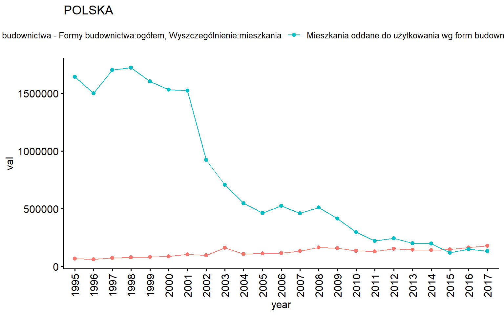
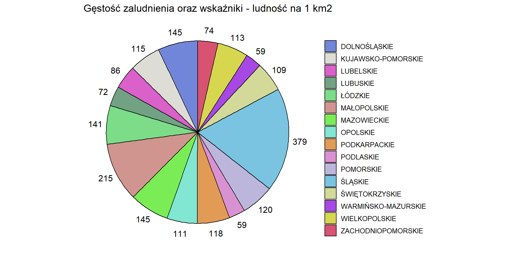
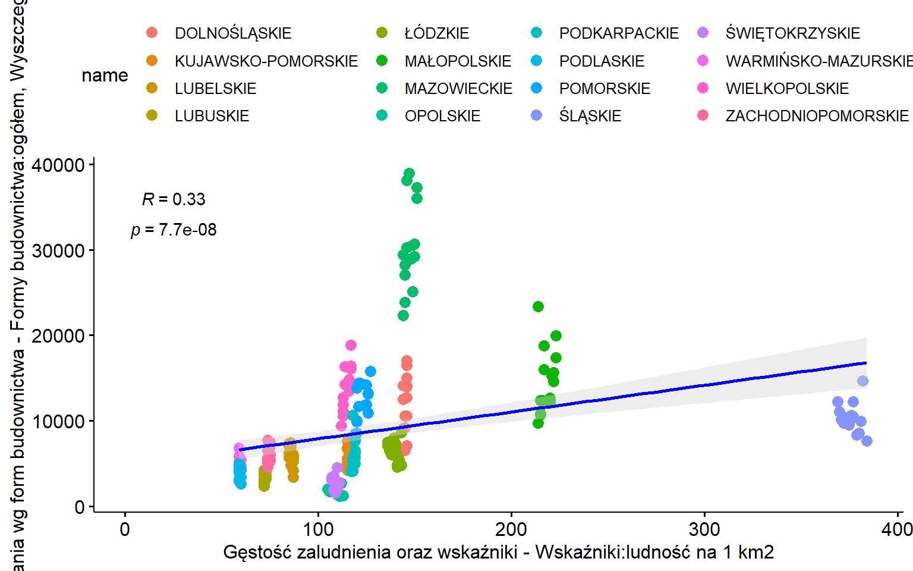

The bdl package is an interface to Local Data Bank(Bank Danych Lokalnych - bdl) API with set of useful tools like quick plotting using data from data bank.
Working with bdl is based on id codes. Most of data downloading functions requires specifying one or vector of multiple unit or variable ids as a string.
It is recommended to use private API key which u can get here. To apply use: options(bdl.api_private_key ="your_key")
Also every function returns data by default in Polish. If you would like get data in English just add lang = "en" to any function.
Any metadata information (unit levels, aggregates, NUTS code explanation etc.) can be found here.
When searching for unit id we can use two methods:
search_units()
get_units()
Units consist of 6 levels:
get_levels()
#> # A tibble: 8 x 2
#> id name
#> <int> <chr>
#> 1 0 Poziom Polski
#> 2 1 Poziom Makroregionów
#> 3 2 Poziom Województw
#> 4 3 Poziom Regionów
#> # ... with 4 more rowsLowest - seventh level has own separate functions with suffix localities. Warning - localities functions have different set of arguments. Check package or API documentation for more info.
Direct searching search_units() takes couple different arguments like:
name - required search phrase (can be empty string)level - narrows returned units to given leveland more. To look for more arguments on any given function check package or API documentation.
search_units(name = "wro")
#> # A tibble: 15 x 6
#> id name parentId level kind hasDescription
#> <chr> <chr> <chr> <int> <chr> <lgl>
#> 1 023016124083 Wronki 0230161240~ 6 3 FALSE
#> 2 023016124084 Wronki - miasto 0230161240~ 6 4 FALSE
#> 3 023016124085 Wronki - obszar wiej~ 0230161240~ 6 5 FALSE
#> 4 030210400000 PODREGION WROCŁAWSKI 0302100000~ 4 <NA> FALSE
#> # ... with 11 more rows
search_units(name = "", level = 3)
#> # A tibble: 17 x 5
#> id name parentId level hasDescription
#> <chr> <chr> <chr> <int> <lgl>
#> 1 011210000000 REGION MAŁOPOLSKIE 011200000000 3 FALSE
#> 2 012410000000 REGION ŚLĄSKIE 012400000000 3 FALSE
#> 3 020810000000 REGION LUBUSKIE 020800000000 3 FALSE
#> 4 023010000000 REGION WIELKOPOLSKIE 023000000000 3 FALSE
#> # ... with 13 more rowsTo get all units available in local data bank run get_units() without any argument(warning - it can eat data limit very fast around 4.5k rows):
To narrow the list add unitParentId. Function will return all children units for a given parent at all levels. Add level argument to filter units even further.
get_units(parentId = "000000000000", level = 5)
#> # A tibble: 382 x 6
#> id name parentId level kind hasDescription
#> <chr> <chr> <chr> <int> <chr> <lgl>
#> 1 011212001000 Powiat bocheński 011212000000 5 1 FALSE
#> 2 011212006000 Powiat krakowski 011212000000 5 1 FALSE
#> 3 011212008000 Powiat miechowski 011212000000 5 1 FALSE
#> 4 011212009000 Powiat myślenicki 011212000000 5 1 FALSE
#> # ... with 378 more rowsSubjects are themed directories of variables.
We have two searching methods for both subjects and variables:
search_variables() and search_subjects()
get_subjects() and get_variables()
To directly search for subject we just provide search phrase:
search_subjects("lud")
#> # A tibble: 125 x 6
#> id name hasVariables children levels parentId
#> <chr> <chr> <lgl> <list> <list> <chr>
#> 1 K3 LUDNOŚĆ FALSE <chr [7]> <int [5]> <NA>
#> 2 G7 STAN LUDNOŚCI FALSE <chr [18]> <int [4]> K3
#> 3 G260 STAN ZDROWIA LUDNOŚCI FALSE <chr [5]> <int [1]> K22
#> 4 G299 NSP 2002 - LUDNOŚĆ FALSE <chr [29]> <int [4]> K31
#> # ... with 121 more rowsSubjects consist of 3 levels (categories, groups, subgroups) - K, G and P respectively. The fourth level of subject (child of subgroup) would be variables.
To list all top level subjects use get_subjects():
get_subjects()
#> # A tibble: 32 x 5
#> id name hasVariables children levels
#> <chr> <chr> <lgl> <list> <list>
#> 1 K1 PODZIAŁ TERYTORIALNY FALSE <chr [2]> <int [3]>
#> 2 K2 SAMORZĄD TERYTORIALNY FALSE <chr [9]> <int [3]>
#> 3 K3 LUDNOŚĆ FALSE <chr [7]> <int [5]>
#> 4 K4 RYNEK PRACY FALSE <chr [9]> <int [4]>
#> # ... with 28 more rowsTo list sub-subjects to given category or group use get_subjects() with parentId argument:
get_subjects(parentId = "K3")
#> # A tibble: 7 x 6
#> id parentId name hasVariables children levels
#> <chr> <chr> <chr> <lgl> <list> <list>
#> 1 G7 K3 STAN LUDNOŚCI FALSE <chr [18~ <int [4~
#> 2 G8 K3 MIGRACJE WEWNĘTRZNE I ZAG~ FALSE <chr [14~ <int [3~
#> 3 G10 K3 GOSPODARSTWA DOMOWE FALSE <chr [9]> <int [1~
#> 4 G534 K3 URODZENIA I ZGONY FALSE <chr [13~ <int [4~
#> # ... with 3 more rows
get_subjects(parentId = "G7")
#> # A tibble: 18 x 6
#> id parentId name hasVariables children levels
#> <chr> <chr> <chr> <lgl> <list> <list>
#> 1 P1336 G7 Ludność wg miejsca zamieszk~ TRUE <list [0~ <int ~
#> 2 P1341 G7 Ludność wg pojedynczych roc~ TRUE <list [0~ <int ~
#> 3 P1342 G7 Ludność w wieku przedproduk~ TRUE <list [0~ <int ~
#> 4 P2137 G7 Ludność wg grup wieku i płci TRUE <list [0~ <int ~
#> # ... with 14 more rowsFirstly you can list variables for given subject (subgroup):
get_variables("P2425")
#> # A tibble: 3 x 6
#> id subjectId n1 level measureUnitId measureUnitName
#> <int> <chr> <chr> <int> <int> <chr>
#> 1 60559 P2425 ludność na 1 km2 6 26 osoba
#> 2 458238 P2425 gęstość zaludnienia~ 6 26 osoba
#> 3 458603 P2425 zmiana liczby ludno~ 6 26 osobaSecondly you can direct search variables with search_variables(). You can use empty string as name to list all variables but I strongly advise against as it has around 40 000 rows and you will probably hit data limit.
search_variables("samochod")
#> # A tibble: 399 x 8
#> id subjectId n1 n2 level measureUnitId measureUnitName n3
#> <int> <chr> <chr> <chr> <int> <int> <chr> <chr>
#> 1 1688 P1883 samoch~ ogółem 6 9 szt. <NA>
#> 2 1689 P1883 samoch~ gospod~ 6 9 szt. <NA>
#> 3 1690 P1883 samoch~ ogółem 6 9 szt. <NA>
#> 4 1691 P1883 samoch~ gospod~ 6 9 szt. <NA>
#> # ... with 395 more rowsYou can narrow search to given subject - subgroup:
search_variables("lud", subjectId = "P2425")
#> # A tibble: 3 x 6
#> id subjectId n1 level measureUnitId measureUnitName
#> <int> <chr> <chr> <int> <int> <chr>
#> 1 60559 P2425 ludność na 1 km2 6 26 osoba
#> 2 458238 P2425 gęstość zaludnienia~ 6 26 osoba
#> 3 458603 P2425 zmiana liczby ludno~ 6 26 osobaIf you picked unit and variable codes you are ready to download data. You can do this two ways: - Download data of multiple variables on single unit get_data_by_unit() - Download data of single variable on multiple units get_data_by_variable()
We will use get_data_by_unit(). We specify our single unit as unitId string argument and variables by vector of strings. Optionally we can specify interested years of data. If not all available years.
get_data_by_unit(unitId = "023200000000", varId = "3643")
#> # A tibble: 20 x 6
#> id measureUnitId lastUpdate year val attrId
#> <chr> <int> <chr> <chr> <dbl> <int>
#> 1 3643 26 2019-05-22T16:15:20.397 1999 1 1
#> 2 3643 26 2019-05-22T16:15:20.397 2000 2 1
#> 3 3643 26 2019-05-22T16:15:20.397 2001 4 1
#> 4 3643 26 2019-05-22T16:15:20.397 2002 3 1
#> # ... with 16 more rows
get_data_by_unit(unitId = "023200000000", varId = c("3643", "2137", "148190"))
#> # A tibble: 49 x 6
#> id measureUnitId lastUpdate year val attrId
#> <chr> <int> <chr> <chr> <dbl> <int>
#> 1 2137 18 2018-09-25T14:54:06.187 1998 10402 1
#> 2 2137 18 2018-09-25T14:54:06.187 1999 95582 1
#> 3 2137 18 2018-09-25T14:54:06.187 2000 12977 1
#> 4 2137 18 2018-09-25T14:54:06.187 2001 1486 1
#> # ... with 45 more rowsTo get more information about data we can add type argument and set it to "label" to add additional column with variable info.
We will use get_data_by_variable(). We specify our single variable as varId string argument. If no unitParentId is provided function will return all available units for given variable. Setting unitParentId will return all available children units (on all levels). To narrow units level set unitLevel. Optionally we can specify interested years of data. If not all available years.
get_data_by_variable("420", unitParentId = "011210000000")
#> # A tibble: 294 x 5
#> id name year val attrId
#> <chr> <chr> <chr> <dbl> <int>
#> 1 011210000000 REGION MAŁOPOLSKIE 1995 75956 1
#> 2 011210000000 REGION MAŁOPOLSKIE 1996 98534 1
#> 3 011210000000 REGION MAŁOPOLSKIE 1997 127267 1
#> 4 011210000000 REGION MAŁOPOLSKIE 1998 148881 1
#> # ... with 290 more rows
get_data_by_variable("420", unitLevel = "4")
#> # A tibble: 1,246 x 5
#> id name year val attrId
#> <chr> <chr> <chr> <dbl> <int>
#> 1 011212000000 PODREGION KRAKOWSKI 1995 3063 1
#> 2 011212000000 PODREGION KRAKOWSKI 1996 1193 1
#> 3 011212000000 PODREGION KRAKOWSKI 1997 1704 1
#> 4 011212000000 PODREGION KRAKOWSKI 2000 117 1
#> # ... with 1,242 more rowsThe bdl package provide couple of additional functions for summarizing and visualizing data.
Data downloaded via get_data_by_unit() and get_data_by_variable() van be easily summarized by summary():
df <- get_data_by_variable(varId = "3643", unitParentId = "010000000000")
summary(df)
#> # A tibble: 5 x 7
#> # Groups: id [5]
#> id name mean std min max variance
#> <chr> <chr> <dbl> <dbl> <dbl> <dbl> <dbl>
#> 1 010000000000 MAKROREGION POŁUDNIOWY 8.35 2.18 4 12 4.77
#> 2 011200000000 MAŁOPOLSKIE 3.1 1.62 1 6 2.62
#> 3 011210000000 REGION MAŁOPOLSKIE 3.1 1.62 1 6 2.62
#> 4 012400000000 ŚLĄSKIE 5.25 1.29 2 7 1.67
#> # ... with 1 more rowPlotting functions in this package are interfaces to data downloading functions. Some of them require specifying data_type - method for downloading data and rest of arguments will be relevant to specified data_type function. Check documentation for more details.


Scatter plot is unique - requires vector of only 2 variables.
scatter_2var_plot(data_type ="variable" ,c("60559","415"), unitLevel = "2")
#> Joining, by = c("id", "name", "year")
With bdl package comes bdl.maps dataset containing spatial maps for each Poland’s level. generate_map() use them to generate maps filled with bdl data. Use unitLevel to change type of map. The lower level is chosen the slower map will generate as it has more spatial data to process.
Downloading functions get_data_by_unit() and get_data_by_variable() have alternative “multi” downloading mode. Function that would work for example single unit, if provided a vector will make additional column with values for each unit provided:
get_data_by_unit(unitId = c("023200000000", "020800000000"), varId = c("3643", "2137", "148190"))
#> Joining, by = c("id", "year")
#> # A tibble: 49 x 4
#> id year val_023200000000 val_020800000000
#> <chr> <chr> <dbl> <dbl>
#> 1 2137 1998 10402 10929
#> 2 2137 1999 95582 10125
#> 3 2137 2000 12977 2190
#> 4 2137 2001 1486 2340
#> # ... with 45 more rowsOr multiple variables for get_data_by_variable():
get_data_by_variable(varId =c("3643","420"), unitParentId = "010000000000")
#> Joining, by = c("id", "name", "year")
#> # A tibble: 100 x 5
#> id name year val_3643 val_420
#> <chr> <chr> <chr> <dbl> <dbl>
#> 1 010000000000 MAKROREGION POŁUDNIOWY 1999 12 225459
#> 2 010000000000 MAKROREGION POŁUDNIOWY 2000 9 129602
#> 3 010000000000 MAKROREGION POŁUDNIOWY 2001 10 140821
#> 4 010000000000 MAKROREGION POŁUDNIOWY 2002 8 78668
#> # ... with 96 more rowsThis type of downloading is removing some of columns from original “single” data download.
This mode works for locality version as well.